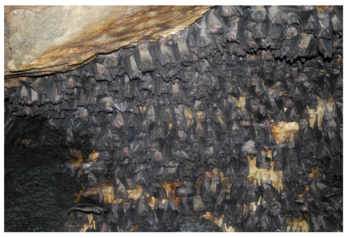

Marburg virus disease (MVD)
Marburg virus disease (MVD) is a rare but severe hemorrhagic fever which affects both people and non-human primates. MVD is caused by the Marburg virus, a genetically unique zoonotic (or, animal-borne) RNA virus of the filovirus family. The six species of Ebola virus are the only other known members of the filovirus family.
Marburg virus was first recognized in 1967, when outbreaks of hemorrhagic fever occurred simultaneously in laboratories in Marburg and Frankfurt, Germany and in Belgrade, Yugoslavia (now Serbia). Thirty-one people became ill, initially laboratory workers followed by several medical personnel and family members who had cared for them. Seven deaths were reported. The first people infected had been exposed to Ugandan imported African green monkeys or their tissues while conducting research. One additional case was diagnosed retrospectively.
The reservoir host of Marburg virus is the African fruit bat, Rousettus aegyptiacus. Fruit bats infected with Marburg virus do not show obvious signs of illness. Primates (including people) can become infected with Marburg virus, and may develop serious disease with high mortality. Further study is needed to determine if other species may also host the virus.
Origin of MVD
Marburg virus was first recognized in 1967, when outbreaks of hemorrhagic fever occurred simultaneously in laboratories in Marburg and Frankfurt, Germany and in Belgrade, Yugoslavia (now Serbia). Thirty-one people became ill, initially laboratory workers followed by several medical personnel and family members who had cared for them. Seven deaths were reported. The first people infected had been exposed to Ugandan imported African green monkeys or their tissues while conducting research. One additional case was diagnosed retrospectively.
The reservoir host of Marburg virus is the African fruit bat, Rousettus aegyptiacus. Fruit bats infected with Marburg virus do not show obvious signs of illness. Primates (including people) can become infected with Marburg virus, and may develop serious disease with high mortality. Further study is needed to determine if other species may also host the virus.
 Marburg virus reservoir. Egyptian fruit bats (Rousettus aegyptiacus), the putative reservoir of MARV, roosting in the Python cave in Maramagambo Forest, Uganda. Two cases of MVD have been associated with visitors to this cave. Photo courtesy of Bobbie Rae Erickson, Viral Special Pathogens Branch, CDC, Atlanta.Signs and symptoms
After an incubation period of 2-21 days, symptom onset is sudden and marked by fever, chills, headache, and myalgia. Around the fifth day after the onset of symptoms, a maculopapular rash, most prominent on the trunk (chest, back, stomach), may occur. Nausea, vomiting, chest pain, a sore throat, abdominal pain, and diarrhea may appear. Symptoms become increasingly severe and can include jaundice, inflammation of the pancreas, severe weight loss, delirium, shock, liver failure, massive hemorrhaging, and multi-organ dysfunction.
Clinical diagnosis of Marburg virus disease (MVD) can be difficult. Many of the signs and symptoms of MVD are similar to other infectious diseases (such as malaria or typhoid fever) or viral hemorrhagic fevers that may be endemic in the area (such as Lassa fever or Ebola). This is especially true if only a single case is involved.
The case-fatality rate for MVD is between 23-90%.
Transmission
It is unknown how Marburg virus first spreads from its animal host to people; however, for the 2 cases in tourists visiting Uganda in 2008, unprotected contact with infected bat feces or aerosols are the most likely routes of infection.
After this initial crossover of virus from host animal to people, transmission occurs through person-to-person contact. The virus spreads through direct contact (such as through broken skin or mucous membranes in the eyes, nose, or mouth) with:
- Blood or body fluids* (urine, saliva, sweat, feces, vomit, breast milk, amniotic fluid, and semen) of a person who is sick with or died from Marburg virus disease, or
- Objects contaminated with body fluids from a person who is sick with or has died from Marburg virus disease (such as clothes, bedding, needles, and medical equipment).
- Semen from a man who recovered from MVD (through oral, vaginal, or anal sex). The virus can remain in certain body fluids (including semen) of a patient who has recovered from MVD, even if they no longer have symptoms of severe illness. There is no evidence that Marburg virus can spread through sex or other contact with vaginal fluids from a woman who has had MVD.
Spread of the virus between people has occurred in close environments and among direct contacts. A common example is through caregivers in the home or in a hospital (nosocomial transmission).
In previous outbreaks, people who have handled infected non-human primates or have come in direct contact with their body fluids have become infected with Marburg virus. Laboratory exposures can also occur when lab staff handle live Marburg virus.
History of Marburg Virus Disease (MVD) Outbreaks
| Year(s) | Country | Apparent or suspected origin | Reported number of human cases | Reported number (%) of deaths among cases | Situation |
|---|---|---|---|---|---|
| 1967 | Germany and Yugoslavia | Uganda | 31 | 7 (23%) | Simultaneous outbreaks occurred in laboratory workers handling African green monkeys imported from Uganda. In addition to the 31 reported cases, an additional primary case was retrospectively serologically diagnosed. |
| 1975 | Johannesburg, South Africa | Zimbabwe | 3 | 1 (33%) | A man with a recent travel history to Zimbabwe was admitted to hospital in South Africa. Infection spread from the man to his traveling companion and a nurse at the hospital. The man died, but both women were given vigorous supportive treatment and eventually recovered. |
| 1980 | Kenya | Kenya | 2 | 1 (50%) | Recent travel history included a visit to Kitum Cave in Kenya’s Mount Elgon National Park. Despite specialized care in Nairobi, the male patient died. A doctor who attempted resuscitation developed symptoms 9 days later but recovered. |
| 1987 | Kenya | Kenya | 1 | 1 (100%) | A 15-year-old Danish boy was hospitalized with a 3-day history of headache, malaise, fever, and vomiting. Nine days prior to symptom onset, he had visited Kitum Cave in Mount Elgon National Park. Despite aggressive supportive therapy, the patient died on the 11th day of illness. No further cases were detected. |
| 1990 | Russia | Russia | 1 | 1 (100%) | Laboratory contamination. |
| 1998-2000 | Democratic Republic of Congo (DRC) | Durba, DRC | 154 | 128 (83%) | Most cases occurred in young male workers at a gold mine in Durba, in the north-eastern part of the country, which proved to be the epicentre of the outbreak. Cases were subsequently detected in the neighboring village of Watsa. |
| 2004-2005 | Angola | Uige Province, Angola | 252 | 227 (90%) | Outbreak believed to have begun in Uige Province in October 2004. Most cases detected in other provinces have been linked directly to the outbreak in Uige. |
| 2007 | Uganda | Lead and gold mine in Kamwenge District, Uganda | 4 | 1 (25%) | Small outbreak, with 4 cases in young males working in a mine. To date, there have been no additional cases identified. |
| 2008 | USA ex Uganda | Cave in Maramagambo forest in Uganda, at the southern edge of Queen Elizabeth National Park | 1 | 0 (0) | A U.S traveler returned from Uganda in January 2008. The patient developed illness 4 days after returning, was hospitalized, discharged and fully recovered. The patient was retrospectively diagnosed with Marburg virus infection. |
| 2008 | Netherlands ex Uganda | Cave in Maramagambo forest in Uganda, at the southern edge of Queen Elizabeth National Park | 1 | 1 (100%) | A 40-year-old Dutch woman with a recent history of travel to Uganda was admitted to hospital in the Netherlands. Three days prior to hospitalization, the first symptoms (fever, chills) occurred, followed by rapid clinical deterioration. The woman died on the 10th day of the illness. |
| 2012 | Uganda | Kabale | 15 | 4 (27%) | Testing at CDC/UVRI identified a Marburg virus disease outbreak in the districts of Kabale, Ibanda, Mbarara, and Kampala over a 3 week time period. |
| 2014 | Uganda | Kampala | 1* | 1 | Overall, one case was confirmed (fatal) and 197 contacts were followed for 3 weeks. Out of these 197 contacts, 8 developed symptoms similar to Marburg, but all tested negative at the Uganda Virus Research Institute with support from CDC. |
| 2017 | Uganda | Kween | 4 | 3 (75%) | A blood sample from Kween District in Eastern Uganda tested positive for Marburg virus. Within 24 hours of confirmation, a rapid outbreak response was begun. This outbreak occurred as a family cluster with no additional transmission outside of the four related cases. |
| 2021 | Guinea | Guéckédou | 1 | 1 (100%) | One case was reported and confirmed by the Guinean Ministry of Health in a patient who was diagnosed after death. No additional cases were confirmed after more than 170 high-risk contacts were monitored for 21 days. |
*Numbers reflect laboratory confirmed cases only.
Prevention
Prevention focuses on avoiding contact with the viruses. The following precautions can help prevent infection and spread of Ebola virus and Marburg virus.
- Avoid areas of known outbreaks. Before traveling to Africa, find out about current epidemics by checking the Centers for Disease Control and Prevention website.
- Wash your hands frequently. As with other infectious diseases, one of the most important preventive measures is frequent hand-washing. Use soap and water, or use alcohol-based hand rubs containing at least 60% alcohol when soap and water aren't available.
- Avoid bush meat. In developing countries, avoid buying or eating the wild animals, including nonhuman primates, sold in local markets.
- Avoid contact with infected people. In particular, caregivers should avoid contact with an infected person's body fluids and tissues, including blood, semen, vaginal secretions and saliva. Also avoid the person's clothing, bedding or other items that may have touched him or her. People with Ebola virus or Marburg virus are most contagious in the later stages of the disease.
- Follow infection-control procedures. If you're a health care worker, wear specialized personal protective equipment that covers you from head to toe. Keep people who have the viruses isolated from others. Safely throw away needles and sterilize other instruments.
- Don't handle remains. The bodies of people who have died of Ebola virus or Marburg virus are still contagious. Specially organized and trained teams should bury the remains, using appropriate safety equipment.
Treatment
There is no specific treatment for Marburg virus disease. Supportive hospital therapy should be utilized, which includes balancing the patient’s fluids and electrolytes, maintaining oxygen status and blood pressure, replacing lost blood and clotting factors, and treatment for any complicating infections.
Experimental treatments are validated in non-human primate models but have never been tried in humans.